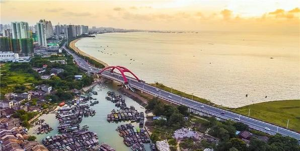

名称的由来:
广西北海市的“北海”一名来自其海城区地角镇的同名渔村“北海村”，由于此地最早开发人群都是疍家渔民，他们长年集中居住在靠近避风港的村落，该避风港面向北面海域（北海市是个半岛），所以此村得名“北海村”。
“朝沧梧而夕北海”，北海的名字很早就有了，北海地名的形成，定位于康熙元年（1662年），清政府设“北海镇标”作为“北海”地名的称谓。由于此种说法转述频繁、引证广泛，因此成为一个定例。据文史资料记载，“北海”一词可追溯至宋朝甚至是魏晋南北朝时期，这个时期，“北海”更多的是被外国人所称呼。1965年6月，北海由广东省划归广西壮族自治区，北海之名也一直沿用至今。
建制沿革：
在新石器时代北海已有人类活动，北海市属北海县地，古称“百越”。
商代，合浦所属的百姓就“请以珠巩”进贡商王。
春秋战国时期，岭南称百越之地，北海属百越的一部分。
秦始皇三十三年（前214年），秦王朝征服百越，在岭南设置桂林郡、南海郡和象郡，北海属象郡。
汉代，北海就是桂东南、粤西的政治、文化、经济中心。这里便是中国“海上丝绸之路”的始发港之一。
东汉建安八年（203年）合浦郡统合浦、徐闻、高凉、凌允、珠崖五县，北海属珠崖。
三国时，孙吴黄武七年（228年）改合浦郡为珠官郡，太元二年（252年）恢复合浦郡。
两晋年间，合浦都是郡治所在地。东晋咸和五年（330年）印度佛教徒智弘，无行从海路入合浦传教。
南北朝建元元年（479年）合浦郡地另设11个郡地，设盐田郡于北海地，杜周一县。
隋大业三年（607年）改为禄洲。

唐武德五年（622年）合浦郡改称越州。
唐贞观六年（632年）添置珠池县，唐贞观八年（634年）越州改称：廉州，因历代出廉官而得名，贞观十二年（638年）废安昌，珠池两县入合浦。唐天宝元年（742年），廉州改称合浦郡。
五代南汉乾亨元年（917年）复称廉州，统合浦，封山，蔡龙，大廉四县。
南汉大宝五年（962年）改为媚州都。宋太平兴国八年（983年）废廉州移至海门三十里（北海地）建太平军廉州古城始建。北海自南北朝（479年）设盐田郡起，至北宋靖康二年（1127年）先后在北海设过盐田郡，海门镇，陆州，珠池县，东罗县等政区。
元至元三十年（1293年）在廉州设提举市舶司，专事海运与外国船只并收“船头规”时为全国六大市舶司之郡，逮扬州，统11个县。
明洪武元年（1368年）设两广总督后改名为廉州府，统合浦，石康，灵山，廉州。
清康熙元年（1662年）设北海镇标（军事建）。
乾隆年间，北海市开始形成。
咸丰五年（1855年）珠场巡检司移驻北海，标志北部湾中心从廉州（合浦）移至北海，北海港口商业城市开始形成。光绪六年（1876年）中英签订《烟台条约》北海与宜昌、芜湖、温州、一并辟为通商口岸。
1949年12月4日解放，当时为镇，归合浦县管辖（属广东南路专区）。1951年1月前为广东省辖市，同年5月委托广西省领导。
1952年3月，正式划归广西。
1955年5月，重归广东。
1956年，降为县级市。
1958年，降为合浦县北海人民公社（属湛江专区）。
1959年，改为县
级镇。
1964年，恢复为县。
1965年6月，又划归广西。
1983年10月，提升为地级市。
1987年7月1日，合浦县划归北海市管辖。
1995年2月，撤销郊区，设立银海区；增设铁山港区，以合浦县属的南康、营盘2个镇归辖，增设兴港镇。
历史图册：
北海老街
北海近代邮电历史陈列馆
北海老街
沿海之城
百年老街
辛勤劳作
北海港务局码头作业区